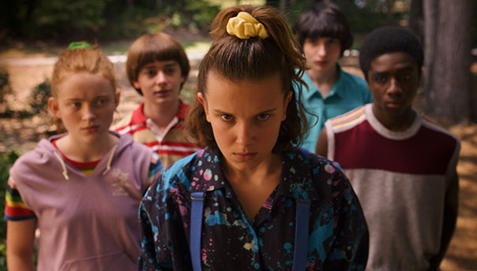

Cuando un niño desaparece, sus amigos, la familia y la policía se ven envueltos en una serie de eventos misteriosos al tratar de encontrarlo. Su ausencia coincide con el avistamiento de una criatura terrorífica y la aparición de una extraña niña.
|
Temporada 1 La Temporada 1 de Stranger Things se estrenó el día 15 de julio del 2016, con un total de 8 episodios disponibles en Netflix. |
|
|
Temporada 2 La Temporada 2 de la serie Stranger Things original de Netflix fue confirmada por Netflix el 31 de agosto de 2016 para su estreno en 2017. Se establece en Hawkins en el otoño de 1984, la historia continúa sobre como fuerzas sobrenaturales una vez más comienzan a afectar a la ciudad. |
|
|  |
Temporada 3 La Temporada 3 de la serie Stranger Things original de Netflix fue confirmada por Netflix el 1 de enero del 2019 a la medianoche para estrenarse el 4 de julio. Se desarrolla un año después, a mediados de 1985, en medio de la popularidad de la película Back to the Future. |
|
Temporada 4 La Temporada 4 de la serie Stranger Things original de Netflix se anunció oficialmente el 30 de septiembre de 2019. Se anunció que la primera mitad de la temporada se estrenaria en Netflix el 27 de mayo de 2022, mientras que la segunda mitad se estrena el 1 de julio. |